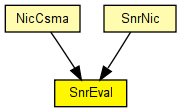
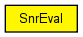

Represents the radio. Frames received from higher layers (typically the MAC protocol) are transmitted on the radio channel, using the global ChannelControl module. Frames received on the radio channel will have their signal-noise ratio evaluated and passed up to the decider. (It is the decider's task to determine whether the frame was received correctly, and pass it up to the MAC layer).
The receive/transmit channel (frequency) can be changed by sending SnrEval a blank cMessage with PHY_C_CONFIGURERADIO as message kind, and a PhyControlInfo object attached to it as control info, to hold the new channel number. If the radio is currently transmitting, the channel switch will actually take place after the transmission is completed.
This component has been taken over from Mobility Framework 1.0a5.
The following diagram shows usage relationships between types. Unresolved types are missing from the diagram. Click here to see the full picture.
The following diagram shows inheritance relationships for this type. Unresolved types are missing from the diagram. Click here to see the full picture.
If a module type shows up more than once, that means it has been defined in more than one NED file.
| NicCsma (compound module) |
The CsmaNic contains a csma-like MAC layer. The SnrEval module is used as the mac needs a RadioState to be published. However as still the BasicDecider is used all messages will be delivered to the MAC and no packets get lost |
| SnrNic (compound module) |
This is the easiest nic to implement "real" network behaviour. It uses the CsmaMacLayer and the SnrDecider and SnrEval modules. |
| Name | Type | Default value | Description |
|---|---|---|---|
| channelNumber | double | 0 |
channel identifier |
| debug | bool | false |
debug switch |
| transmitterPower | double | ||
| bitrate | double | ||
| headerLength | int | ||
| thermalNoise | double | ||
| pathLossAlpha | double | ||
| sensitivity | double |
| Name | Value | Description |
|---|---|---|
| display | i=block/wrxtx |
| Name | Direction | Size | Description |
|---|---|---|---|
| uppergateIn | input |
from higher layer protocol (MAC) |
|
| uppergateOut | output |
to decider (decider connects to higher layer protocol, i.e. the MAC) |
|
| radioIn | input |
to receive frames (AirFrame) on the radio channel |
// // Represents the radio. Frames received from higher layers (typically the // MAC protocol) are transmitted on the radio channel, using the global // ChannelControl module. Frames received on the radio channel will have // their signal-noise ratio evaluated and passed up to the decider. // (It is the decider's task to determine whether the frame was received // correctly, and pass it up to the MAC layer). // // The receive/transmit channel (frequency) can be changed by sending // SnrEval a blank cMessage with PHY_C_CONFIGURERADIO as message kind, and // a PhyControlInfo object attached to it as control info, to hold the // new channel number. If the radio is currently transmitting, the channel // switch will actually take place after the transmission is completed. // // This component has been taken over from Mobility Framework 1.0a5. // //# FIXME merge docu with BasicSnrEval's simple SnrEval { parameters: double channelNumber = default(0); // channel identifier bool debug = default(false); // debug switch double transmitterPower @unit("mW"); double bitrate @unit("bps"); int headerLength @unit(b); double thermalNoise @unit("dBm"); double pathLossAlpha; double sensitivity @unit(mW); @display("i=block/wrxtx"); gates: input uppergateIn; // from higher layer protocol (MAC) output uppergateOut; // to decider (decider connects to higher layer protocol, i.e. the MAC) input radioIn @labels(AirFrame); // to receive frames (AirFrame) on the radio channel }